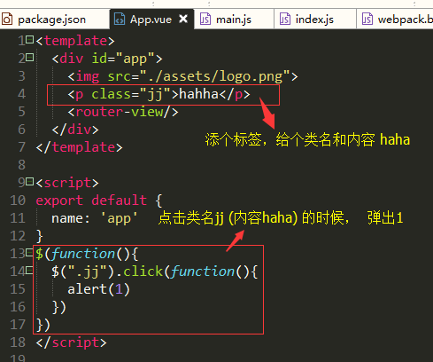

引言
如果说vue是前端工程化使用较多的骨架，那么JavaScript就是我们的前端的细胞。MVVM模式让我们体验到前端开发的便携，无需再过多的考虑DOM的操作。而vue的渐进式开发（逐步引用组件，按需引入），也让许多新手前端开发人员逐步绕过对jQuery的学习。jQuery需要记忆的内容颇多，这也让jQuery变得不那么受新入行开发者喜欢。
在前端工程化的需求没有普及的时候，许多公司使用的是后端渲染技术，为了能够实现友好的前端交互效果，需要写好大量的jQuery、JavaScript和CSS，所以到目前还是有大量的公司维护和使用jQuery。
前端工程化让许多人看到了开发的效率，但公司还是需要维护产品线，所以解决jQuery在vue的使用是每位前端工程师的必经之路，毕竟从零造轮子是一个非常痛苦耗时的事。
今天我们提供两种方法引用，切记二选其一。
方法一：在webpage中引入JQ（推荐）
在vue中安装jQuery组件
老乡已经默认你的已经使用vue-cli脚手架进行操作了。至于如何使用vue-cli，可以进入vue的官网中查看相关开发文档。
- 在项目终端中输入
npm install jquery -save-dev 在build文件夹中找到webpack.base.conf.js文件，打开，在第一行添加
1
var webpack = require('webpack')
效果：
1
2
3
4
5
6// webpack.base.conf.js
var webpack = require('webpack')
const path = require('path')
const utils = require('./utils')
const config = require('../config')在同样这个文件中（webpack.base.conf.js）的module.exports里添加：
1
2
3
4
5
6
7plugins: [
new webpack.ProvidePlugin({
$:"jquery",
jQuery:"jquery",
"windows.jQuery":"jquery"
})
],在入口文件main.js中输入：
import $ from 'jQuery'
提示：这里无需再下面注册，有些IDE会提示标红，无需处理。查看执行效果
在app.vue中写一个案例

这种方法是在开发中比较看好的方法，方便易用。同样，也有不希望在所有的页面都引用到jQuery，这样我们就会考虑到按需引用。方法二：按需引用jQuery方法
这种方法只在单页面中使用jQuery时进行操作。这种方法适用于极个别的交互页面中。
jQuery的安装和配置
- 和“方法一”中的操作一致，在终端中输入
npm install jquery --save-dev - 找到build中webpack.base.conf文件
1
2
3
4
5
6
7
8
9
10
11// webpack.base.conf
module.exports = {
resolve: {
extensions: ['.js', '.vue', '.json'],
alias: {
'vue$': 'vue/dist/vue.esm.js',
'@': resolve('src'),
'jquery': path.resolve(__dirname, '../node_modules/jquery/src/jquery')
}
}
}
jq的引用
在APP.vue中或者需要使用的地方1
2
3
4
5
6
7
8
9
10
11
12
13
14
15
16<template>
<div>
<p class="jj">请点击我</p>
</div>
</template>
<script>
import $ from 'jquery'
export default {
name: 'app',
mounted () {
$('.jj').click(function(){
alert(1)
})
}
}
</script>
结语
方法千万条，道理第一条。本文是我在开发中遇到jq无法引入后查阅资料后整理的方法。但不论是什么方法，我们最终的目标都是要完成项目的需求。技术的革新速度和时代的发展飞快，jQuery也在不断发展，许多人觉得这类语言过于复杂多变，但这就如同学习python一样，开始“学习一时爽，一直学习一直爽”，但到达技术瓶颈时，你会发现总会让人很棘手。我就多次遇到vue处理的问题而就迫使我去阅读底层技术。所以，学无止境，有效努力，持续输出。